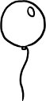

İki ayrı kutup var içimde; nicedir bildiğim, bilmezden geldiğim. Birine zahiri kanadım diyorum. Bir nevi dişi Ebussuud Efendi. Bana sürekli gelecekten dem vuran ve şimdi'yi geleceğin hizmetine koşmaya çalışan biri. Yaza yaza yükselmek, yüksele yüksele ermek, var olmaktan ziyade sahip olmak isteyen huzursuz yanım. İlerlemeye inanmış bir misyoner, daha fazlasını edinmeye odaklanmış bir kapitalist, yazıyı yazarlık üzerinden tanımlayan bir kalem-ehli. Sonrası kaygısı sarmış benliğini. Attığım her adımda bana, "Peki ya sonra? Ya daha sonra?" dedirten biri.
"Sonrası kaygısı" edebiyatın ve edebiyatçıların en temel kaygılarından biri. Bir romanı yazarken, tahayyül ettiğiniz bir "sonrası" belirmeye başlar zihninizde. Varmak istediğiniz bir cennet, kaçındığınız bir cehennem. Ödüller, övgülerle örülüdür cennet, ama bundan çok daha fazlasıdır. Hakaretamiz eleştiriler, bulaşıcı kayıtsızlıklarla örülüdür cehennem, ama bundan çok daha fazlasıdır. Bu açıdan bakıldığında hiçbir yazarın cehennemde yanmak ya da cennette mükâfatlandırılmakla ilgili kaygılardan tamamen arınmış bir ruh haliyle oturup yazabildiğini sanmıyorum. Albert Camus'nün de dediği gibi, "Bir yazar çokluk okunmak için yazar. Bunun tersini söyleyenleri alkışlayalım, ama inanmayalım onlara".
Bu bir yüzü yüzümün. Ötekine batıni yanım diyorum. En az dillendirdiğim damarım; romanlarımda kendiliğinden ortaya çıkabilen, çıktı mı kendi başına, bana rağmen akabilen, herkesten ve her şeyden ziyade kendiyle cebelleşen rindane, kalenderane, dervişane damarım. Yazarlığı değil yazının kendisini seven, sonrasında ne olacağını değil tam da şu anda burada ne olduğunu önemseyen, ne sahip ne de var olmaya inanan, alttan alta hiçlikten dem vurup yok olmayı salık veren ve aslında kimsenin anlamayacağını düşündüğümden mümkün mertebe kapattığım, bastırdığım, romanlarıma sakladığım iç fısıltım. Bu yazıyı onun hatırına yazıyorum.
* * *
Bektaşi yıllar sonra çocukluk arkadaşıyla karşılaşır yolda. Arkadaşı hayli yükselmiş, ünlenmiştir aradan geçen zaman zarfında. Başkalarınca takdir edilmeye can, edindiği payelere demir atanlarda görülegelen BEN şişkinliğinden o da mustariptir farkında olmadan. Hep kendinden bahseder. Sündüre sündüre anlatır geçmişteki başarılarını ve gelecekle ilgili planlarını. "Peki ya sonra ne olacaksın?" der deminden beri ses çıkarmadan dinleyen Bektaşi. Arkadaşı gülümser: "Sonra iki tuğlu paşa olacağım." Beriki sorusunu yineler: "Ya sonra?" Arkadaşı onu şöyle bir süzer: "Sonra üç tuğlu paşa olacağım." Bektaşi dayanamaz gene sorar: "Sonra?" Arkadaşı bocalar; "Sonra mı... hiiiç" der fazla düşünmeden. "Bak gördün mü" diye atılır Bektaşi, "o kadar uğraşmaya ne gerek var, ben daha şimdiden senin dönüp dolaşıp geleceğin yerdeyim."
Ününün doruğundayken Şems'i görüp kendi bütününü onda parçalamayı göze alan Mevlâna/ boynunda HİÇ yazılı bir yaftayla fotoğrafını çektiren Neyzen Tevfik/ erkekliğini öldürüp benliğindeki ötekini günışığına çıkarabilmek için bedenini ve ruhunu kadınsılaştıran Taoist rahip/ alanlardan değil verenlerden olmayı öğütleyen Hacı Bektaş/ ömrünü anlatmak üzere hazırladığı Memoirs'ın içini kolajlardan, dışını da tüm fetiş-kitapları aşındırabilmek üzere zımpara kâğıdından tasarlayan Guy Debord/ sadece alıntılardan oluşan bir kitap yazarak "yaratıcı büyük yazar" imgesini parçalamayı hedefleyen Walter Benjamin/ en büyük zaferinin hiçlik olacağına inanan Cioran/ dem-bu-demdir-dem-bu-dem diyen heterodoks/ ilerlemeci-genelleyici tarih yazınının karşısına göçebebilim ile çıkan Deleuze/ hiçbir evinde, toprağının hiçbir katmanında savaşçı-fetihçi bir kültürün izlerine rastlanmayan Çatalhöyük... Bir türlü yüksek sesle ifade etmediğim, roman dışında yazıya dökmediğim, anlaşılmayacağını düşündüğüm için açık etmediğim kıyısız, dipsiz, tesellisiz bir deniz. Diyebilmek için en nihayetinde: "Sen kendini küçük zannedersin. Halbuki en büyük âlem sende toplanmıştır. Ebru bunu fısıldar bize. Bir tek nokta, en ince fırçanın ucuyla suya bırakılan minnacık bir nokta olur sana umman u derya. Kâtreyiz âlemde, lâkin unutma ki tek bir nokta tekmil sırlarını içinde barındırır kâinatın."
Türkiye'de eleştirel-politik bir bakış açısına sahip olup da, içinde yaşadıkları sistemle samimi bir derdi olanların, tarihlerindeki ve kültürlerindeki batınilikten bu kadar bihaber olmasından acı duyuyorum. Tasavvufla pek ilgili olan kesimlerin de eleştirel damardan bunca uzak durmalarından. Amerika'da tek tek gezdiğim her kitapçıda karşıma çıkan The Great Rumi (Büyük Rumi) posterlerinde, takvimlerinde, broşürlerinde Mevlâna'nın, allanıp pullanıp bir Uzakdoğu bilgesi haline getirildiğini ve son tahlilde yeni bir New Age pazarlama nesnesine dönüştürüldüğünü görmeye dayanamıyorum. Kendi memleketimde bu konular üzerine yazıp düşünen insan bu kadar azken bu durağanlığı kırmaya yönelik her hamlenin, "Şimdi de tasavvuf modası çıktı" diye hafife alınmasından şikâyet ediyorum. Osmanlıca kelimeleri ayıklayacağız diye bir kültürü kökleriyle birlikte söküp atmaya çalışanlara; yaşımdan ve cinsiyetimden ve dünya görüşümden ötürü bu meselelerde bezim olmaması gerektiğine inananlara tepki duyuyorum. Kendi kültüründeki derin hiçlik felsefesi ile uzaktan uzağa hayranlıkla takip ettikleri pek çok Batılı düşünür ve sistem-karşıtı hareket arasındaki kan damarlarını fark edemeyenlere içerliyorum. Ben bugünlerde en çok içimdeki batıni damarla yaşıyorum. Ve bu yazıyı onun hatırına yazıyorum.
Arizona